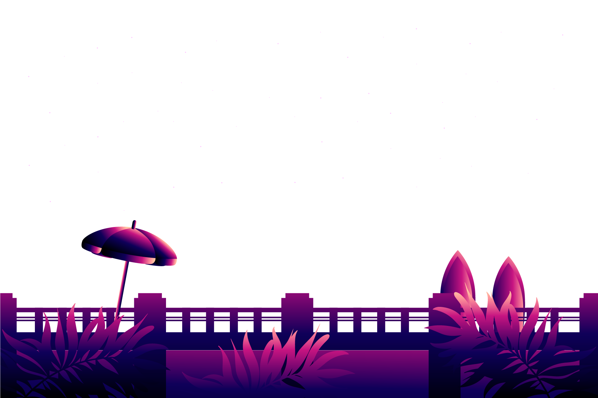
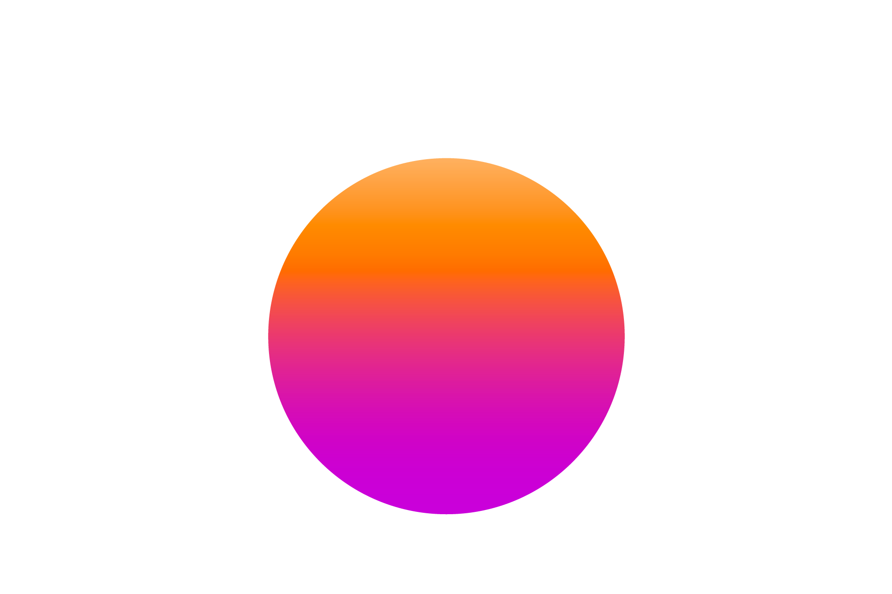
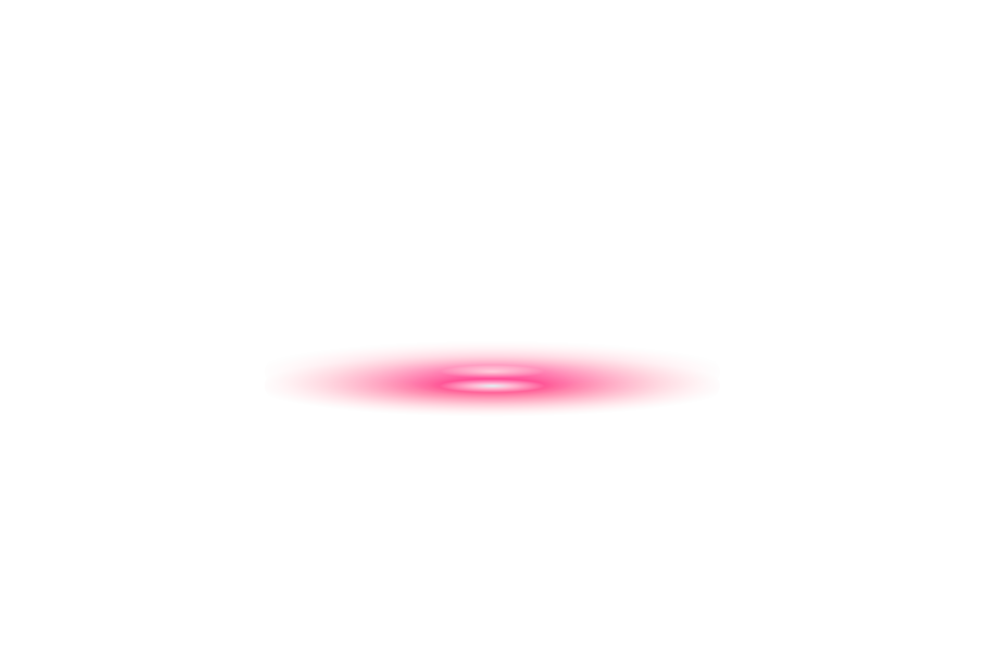
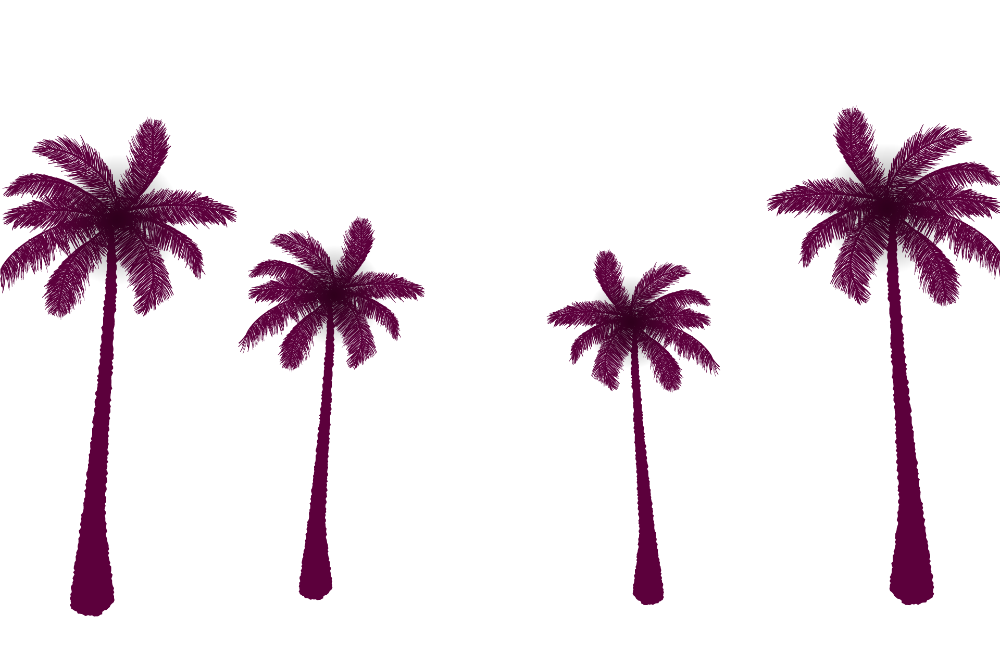
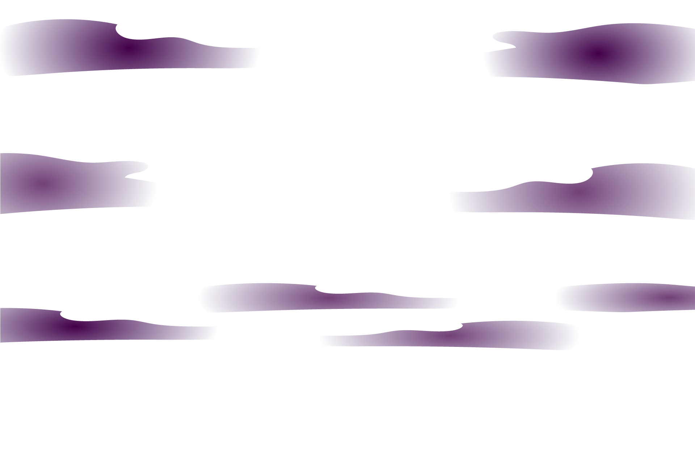
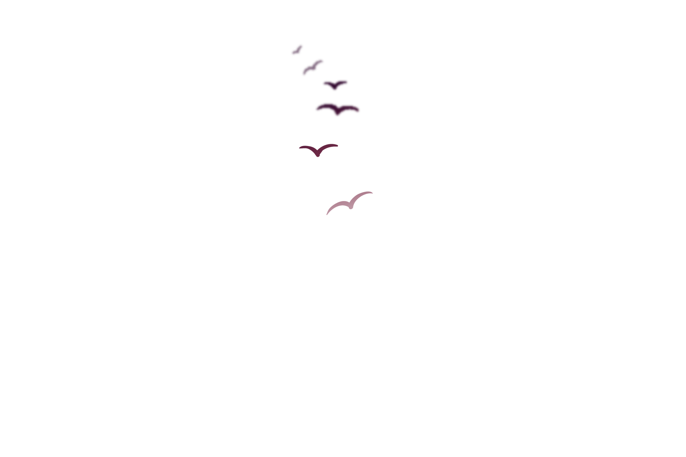
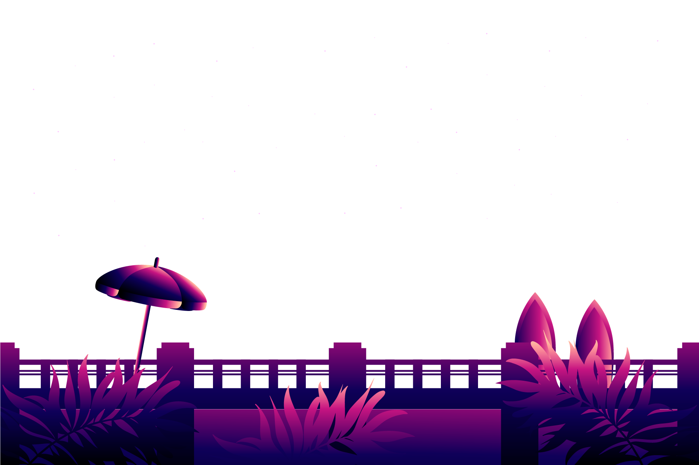
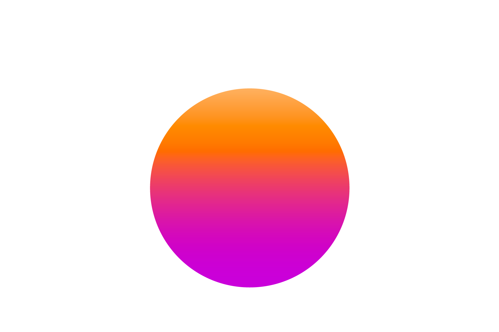
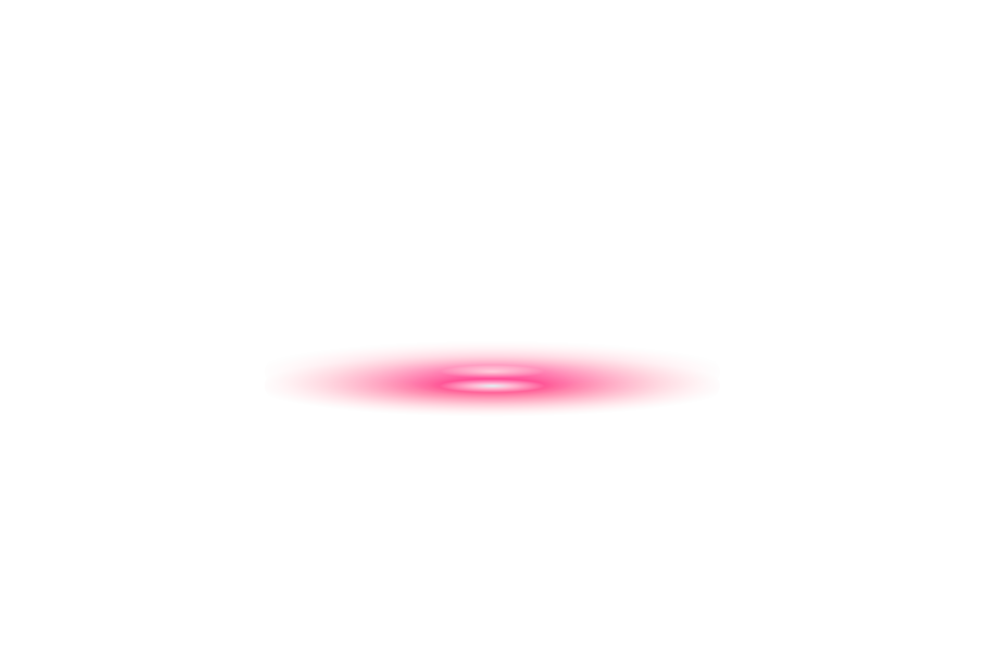
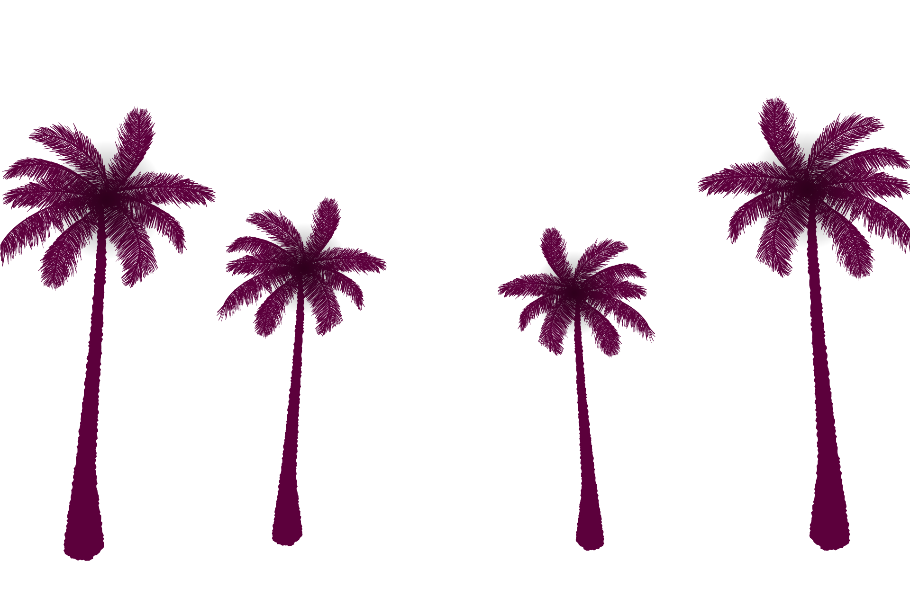
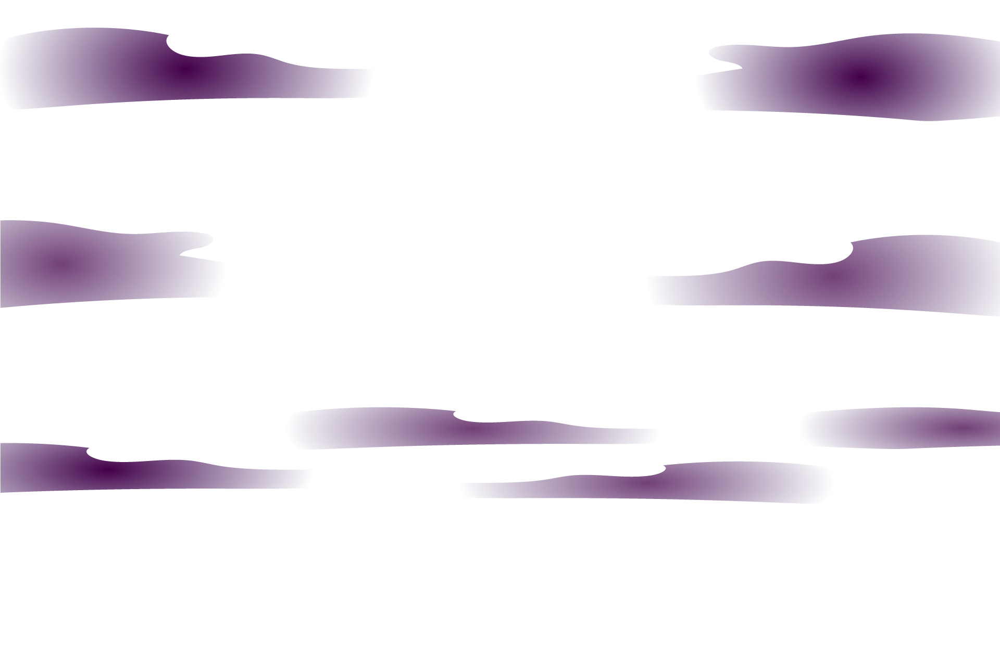
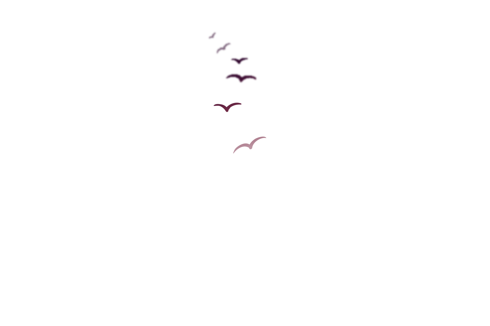

Kashmir
Dal is a lake in Srinagar (Dal Lake is a misnomer as Dal in
Kashmiri means lake), the summer capital of Jammu and Kashmir. The
urban lake, is integral to tourism and recreation in Kashmir and
is named the Jewel in the crown of Kashmir
or
“Srinagar's Jewel”.The lake is also an important source for
commercial operations in fishing and water plant harvesting. The
lake covers an area of 18 square kilometres.